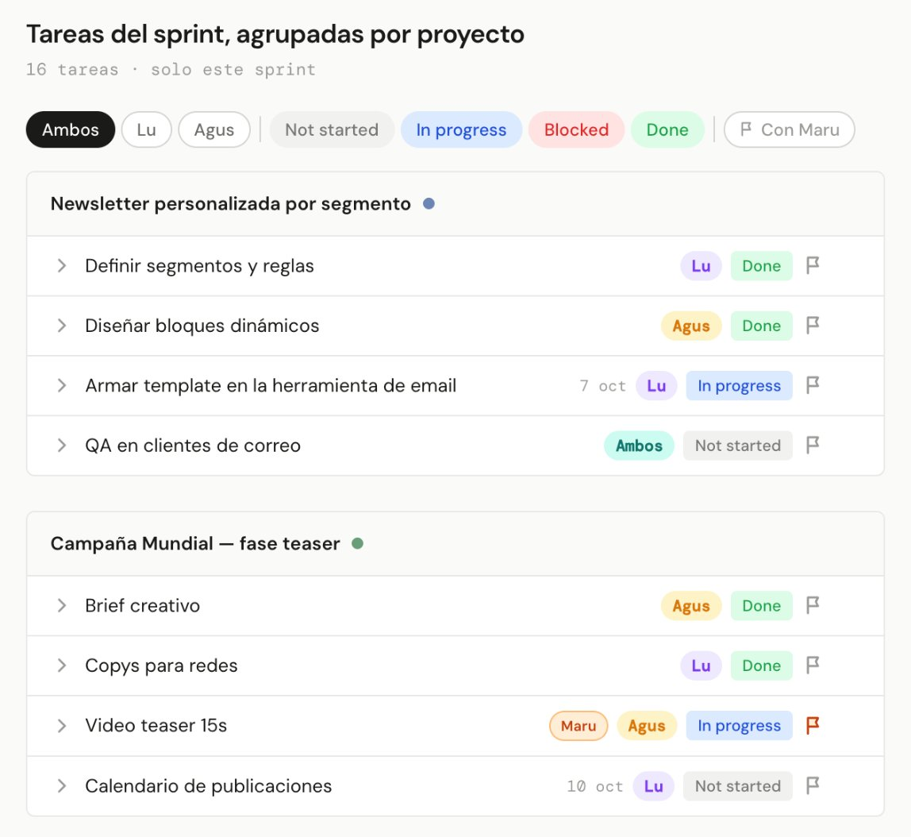
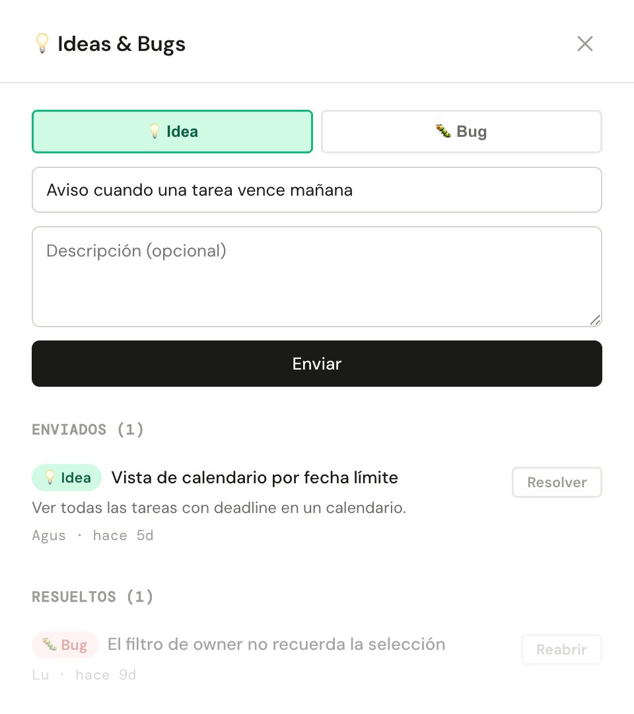
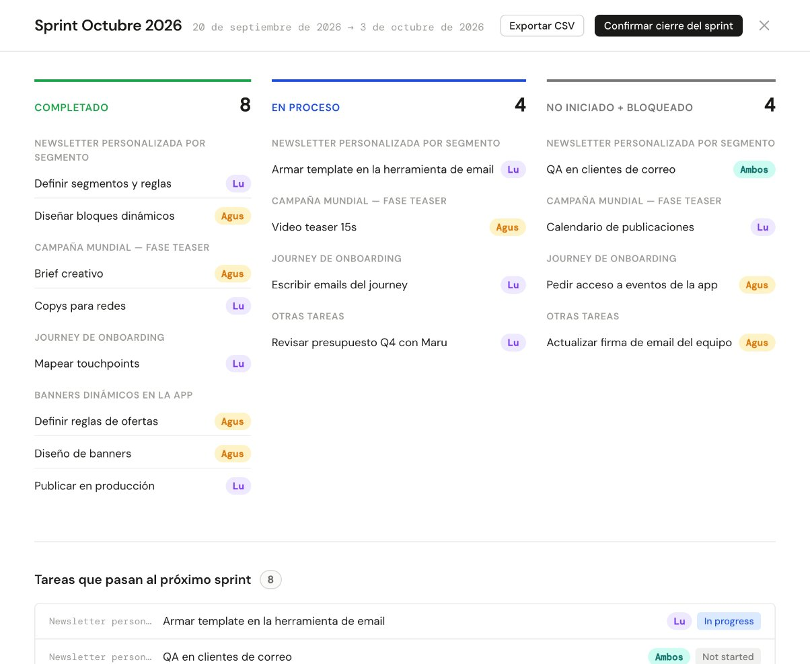
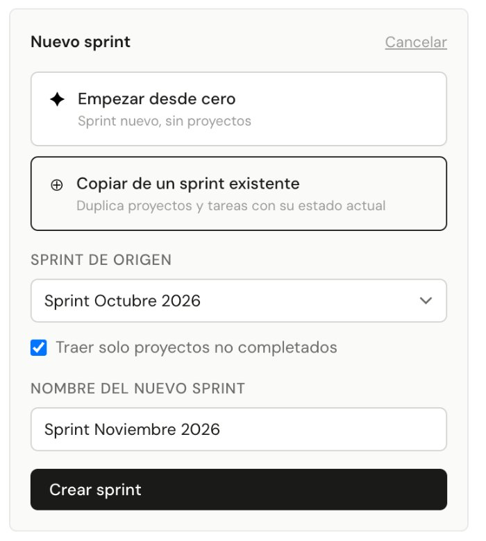

Sprint Board
A real-time sprint tool my marketing team uses every day.
React, TypeScript, Supabase, Vercel · built with Claude Code
The problem
Our marketing backlog had become a bloated dumping ground. Nothing kept the team focused on the sprint actually in front of us.
What I built
A shared, real-time sprint app (React/TypeScript on Supabase Realtime, deployed on Vercel) with an active-sprint view, a filtered task list, a backlog, sprint versioning, CSV export, and a “Ver con Maru” flag for director check-ins.
Key decisions
- No login — trust-based access for a two-person team, chosen for zero friction over unnecessary security ceremony.
- A built-in Ideas & Bugs drawer wired to an automated pipeline that turns feedback into GitHub Issues, so the tool improves itself.
- Sprint versioning with copy-from-existing, so each new sprint starts from the last one rather than a blank page.
Outcome
In daily use by my team, and iterated through its own feedback loop.
A look inside
Shown with a demo copy and invented sprints, projects and tasks.




